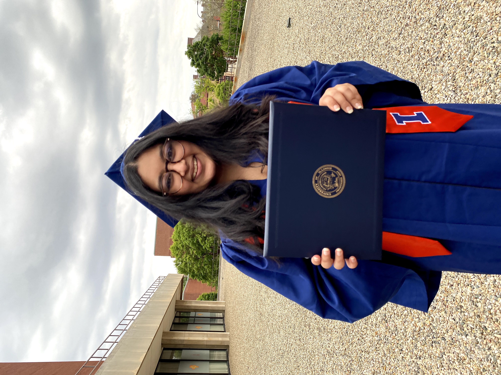

University of Illinois Urbana Champaign May 2021
Mathematics: Operations Research, BSLAS
Minors in Applied Statistics & Informatics
Mathematics: Operations Research, BSLAS
Minors in Applied Statistics & Informatics